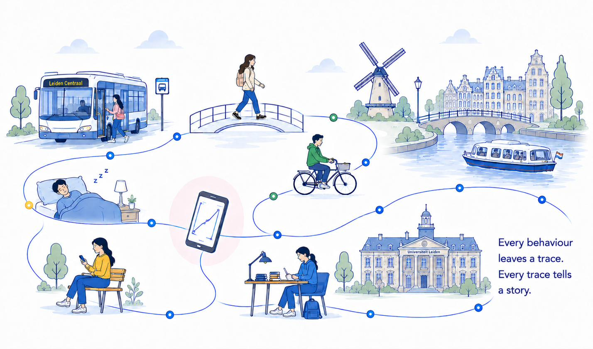

Understanding
Human Behaviour
in Everyday Life
We study the neural and behavioural signals behind everyday smartphone use — building a new generation of brain science focused on how people really think, feel and act, not just how they perform in a lab.
Scroll to explore
CODELAB's
research milestones
-
2014WIRED covers the
smartphone-shaped brain -
2019First sleep-wake cycles
captured from smartphone taps -
2021The Guardian names
the field "tappigraphy" -
2022AI traces ageing and
disease in touch dynamics -
2023Multi-day rhythms
found in smartphone use -
TodayNeural implants and
smartphone data combined -
FutureSpin-offs bring findings
into the clinic
Why it matters
Behaviour unfolds
on the screen, not the bench.
Most of what we know about the brain comes from short, artificial tasks performed on a bench in a lab. But the way people tap, scroll and pause on their smartphones, thousands of times a day, carries a continuous record of how the brain actually works in daily life.
CODELAB reads that record. By combining smartphone touchscreen data with neural recordings — from brain implants to laboratory EEG — we uncover patterns of ageing, sleep and neurological disease that no single lab visit could ever reveal.
international research and clinical partners across five countries, from Leiden to Yale to Tokyo.
spin-off companies launched directly from CODELAB's discoveries, founded in 2016 and 2024.
"A tap on a screen is a small thing. A million of them, over years, is a signature of the brain."
Traditional bench neuroscience
- A single task, a single sitting
- Minutes of behaviour captured
- Behaviour separated from daily life
- One measurement per visit
CODELAB's approach
- Continuous, everyday interaction
- Years of behaviour captured
- Neural and smartphone data combined
- Millions of natural taps and swipes
Partners
Collaborating across borders
Our neuroscience and clinical partners span three continents — from Leiden's own university hospital to research groups in the United States, Scandinavia, Switzerland and Japan.
Leiden
of Medicine
University
of Bern
Japan
Zurich
of Amsterdam
Take part in a study
Contribute a few minutes a day from your phone and help us understand everyday life.